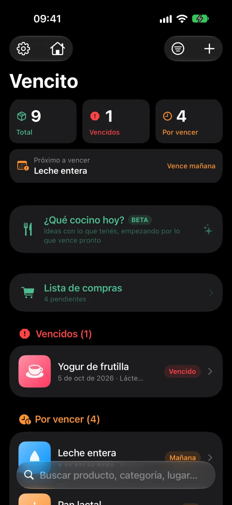
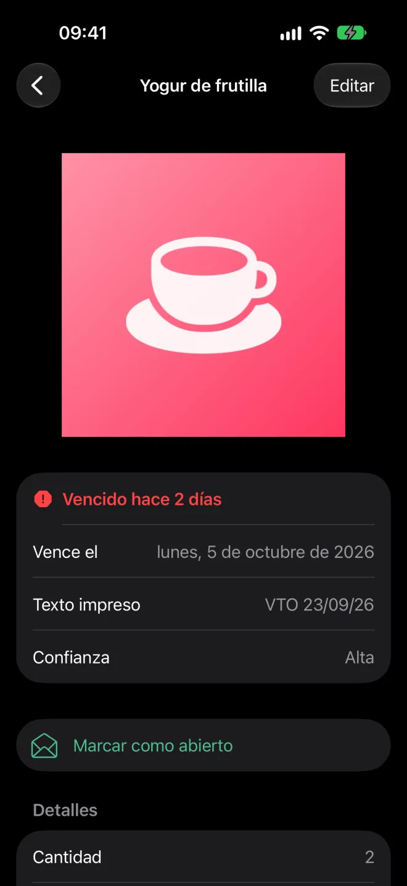
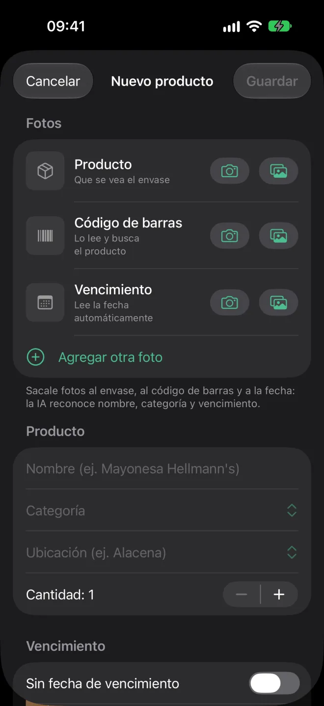
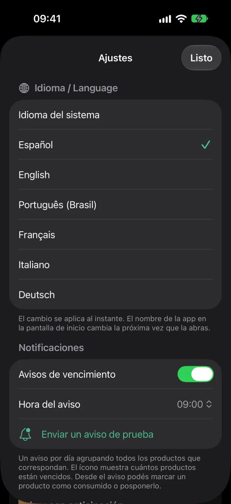
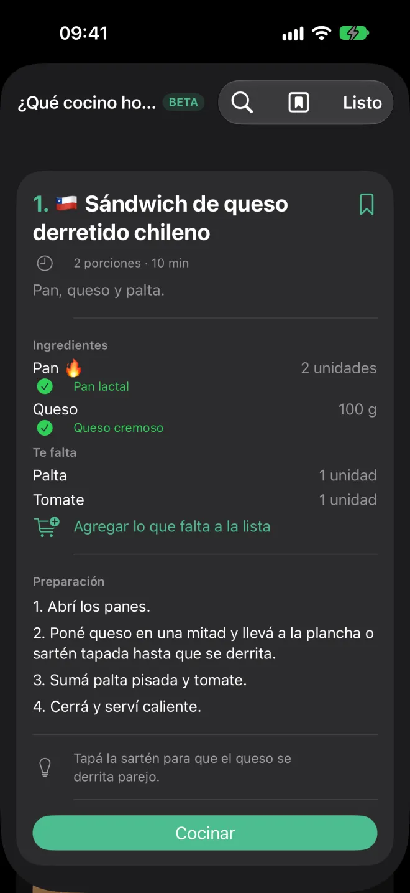
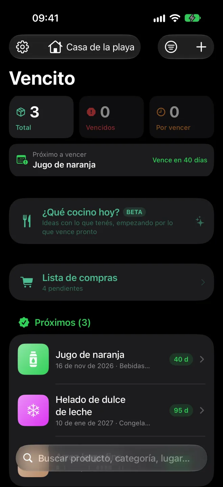
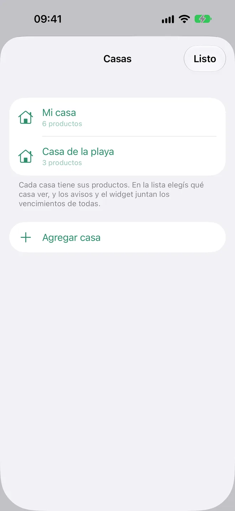
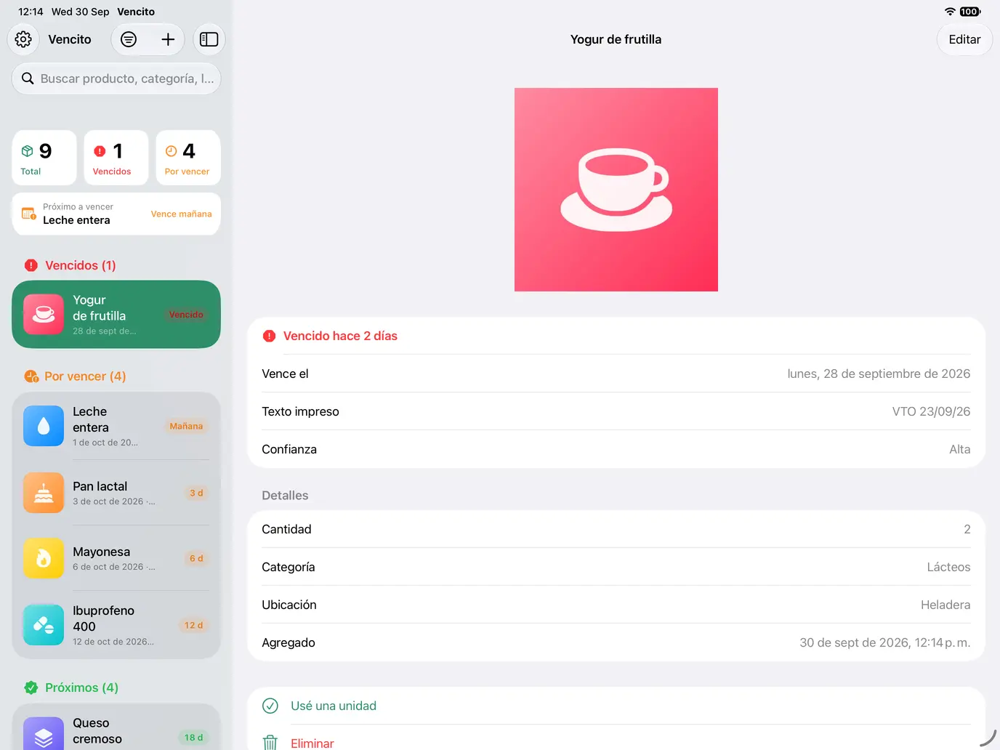

App para iPhone y iPad
Que nada se venza en la alacena.
Sacale una foto al envase y Vencito lee la fecha de vencimiento. Te avisa antes de que caduque y te muestra qué conviene usar primero.
Muy pronto en el App Store · Gratis · iOS y iPadOS 17 o posterior

Cómo funciona
De la góndola a la heladera, en tres pasos
Sacale una foto
Al envase, donde se vea la fecha. Si en la foto aparece el código de barras, también lo lee.
Vencito completa el resto
Lee la fecha, sugiere el nombre y la categoría, y si hay código de barras busca el producto en Open Food Facts. Vos revisás y guardás.
Te avisa a tiempo
Una notificación por día, a la hora que elijas, con lo que está por vencer: por defecto 30, 15, 7, 3 y 1 día antes.
Probalo acá
Escribí lo que dice el envase
Esta es una versión simplificada del lector de fechas de la app. Entiende los formatos que se ven en los envases y prioriza la fecha de vencimiento por sobre la de elaboración.
Fecha de vencimiento
—
—Funciones
Pensada para la alacena, la heladera y el botiquín
Reconocimiento con IA
En iPhone con Apple Intelligence, el modelo de Apple mira la foto y completa nombre, categoría y vencimiento. Corre en el iPhone, sin internet. Las ideas de recetas con IA son opcionales (beta) y vienen apagadas: se activan en Ajustes.
Lector de fechas
VTO 14/02/27, 25-08-2026, 25 AGO 2026, 08/2027… Distingue vencimiento de elaboración y entiende envases en seis idiomas.
Código de barras
Escaneo en vivo o desde la foto. Con Open Food Facts completa el nombre, la marca y la categoría.
¿Qué cocino hoy?
Recetas con lo que tenés, empezando por lo que vence pronto. Un catálogo propio de ~375 platos comunes y fáciles de varios países, en tu idioma, con modo cocina y recetas guardadas. Funciona sin internet.
Varias casas
Cargá los productos de más de una casa y elegí cuál ver o ver todas juntas. Los avisos y el widget juntan los vencimientos de todas.
Cargar varios seguidos
Escaneo continuo: código de barras, fecha y listo. Si la fecha no se lee con seguridad, te pide confirmarla antes de guardarla.
Sin fecha de vencimiento
Para lo que no vence o no tiene fecha: se guarda aparte, sin avisos.
Widgets
En la pantalla de inicio y la bloqueada, con lo próximo a vencer. Tocás un producto y se abre en la app.
Estados de un vistazo
Vencidos, por vencer y próximos, con un resumen arriba y una miniatura de cada producto.
“Consumido” con un gesto
Deslizás y descuenta una unidad o saca el producto. Si te equivocás, agitás el iPhone para deshacer.
iPad
Lista y detalle lado a lado, en cualquier orientación y con multitarea. Con teclado, ⌘N agrega un producto.
Seis idiomas
Español, inglés, portugués (Brasil), francés, italiano y alemán. Se cambia desde Ajustes, al instante.
Accesible
Compatible con VoiceOver y con tamaños de letra grandes. Cada producto se lee completo: nombre, estado y fecha.
Video
Mirá cómo funciona
Un recorrido corto: ¿qué cocino hoy?, el modo cocina, varias casas y el detalle de un producto.
Capturas
Así se ve







En iPad, la lista y el detalle quedan lado a lado.
Privacidad
Tus datos se quedan en tu iPhone
Vencito no tiene cuentas, servidores propios, analíticas ni publicidad.
Todo en el dispositivo
Los productos, las fotos y los ajustes se guardan en tu iPhone o iPad. Si activás la sincronización con iCloud, también en tu iCloud privado (el desarrollador no tiene acceso).
IA sin nube
El texto, los códigos de barras y el reconocimiento con Apple Intelligence se procesan en el dispositivo.
Un solo dato sale, y es opcional
Para buscar un producto se envía únicamente el número del código de barras a Open Food Facts. Se puede desactivar.
Avisos locales
Las notificaciones las programa el propio iPhone. No pasan por ningún servidor.
Preguntas frecuentes
Lo que suelen preguntar
¿Cuánto cuesta?
Es gratis y no tiene funciones bloqueadas. Si te sirve, podés invitarme un café desde Ajustes con una propina opcional.
¿Necesito un iPhone con Apple Intelligence?
No. Sin Apple Intelligence, la app lee la fecha y el nombre con el reconocimiento de texto de Apple. La IA suma la categoría y mejora la lectura en envases difíciles.
¿Funciona sin conexión?
Sí. Solo la búsqueda del producto por código de barras necesita internet.
¿Puedo pasar mis datos a otro teléfono?
Sí. En Ajustes podés exportar un archivo con todos tus productos (con o sin fotos) e importarlo en otro dispositivo.
¿Qué pasa si la fecha dice solo mes y año?
La app toma el último día de ese mes, que es como se interpreta en los envases.
¿Otra duda o un problema? Escribinos en soporte.